Lokaverkefni
Lokaverkefnið er hugsað sem hópaverkefni, en þar sem ég er á austurlandinu og með góðan aðgang að fablab austurlands fékk ég að vinna verkefnið sem einstaklingsverkefni. verkefnið sem ég valdi mér var að teikna vask í fuision 360 og fræsa í shopbot fræsaranum úr timbri í 2.5D. Enn þurfti ég því að sjá um allt ferlið sjálfur, skipulagningu, teikning í fuison, hönnun í v-carve, líma saman efni, fræsingu, heimasíðugerð og gerð myndbands.
Síðan þá hefur mig langað til að hanna sjálfur og fræsa vask sem er í 2.5D eða eins og skál í laginu. og varð því loks
Hugmyndin
Um 2018 var ég að fylgjast með aðila í shobbot fræsaranum og datt þá í hug að gera vask úr timbri. Þar sem ég hafði ekki reynslu á fusion eða fræsaran teiknaði ég hann í autocad í mögum lögum og fékk annan aðila til að fræsa stykkin út fyrir mig. Sá vaksur var ekki eins og skál í laginu eins og myndirnar sýna heldur voru beinar hliðar að framan og aftan. Til að vera vaskin vatnsheldan notaði ég epoxy og er buinn að vera í noktun núna í um 4 ár.
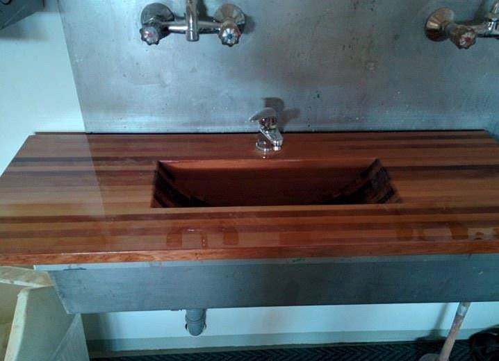 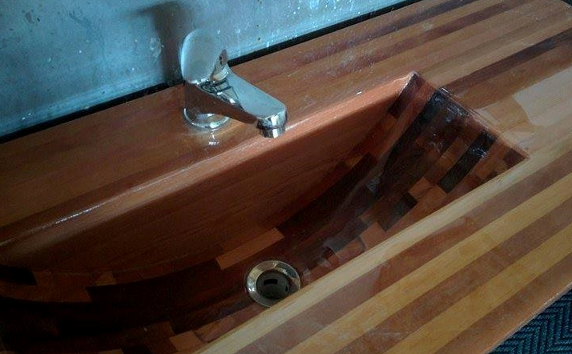
Teikning í Fusion 360
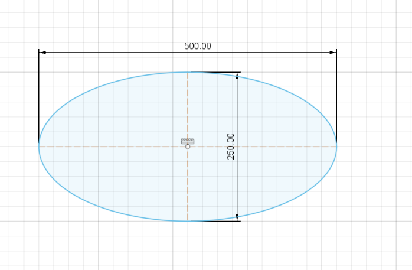Stærðin á vaskinum er ákveðin, ég nota eclipse hef hringin 500x250 en seinna verður hann .
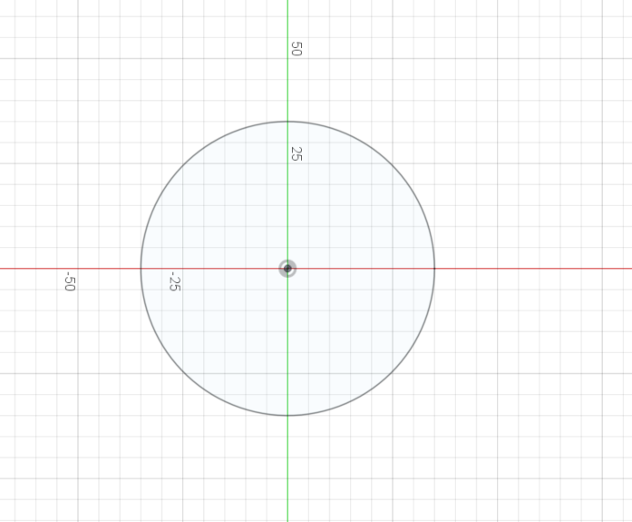Botnin er teiknaður út frá miðju vinnusvæðisins til að einfalda staðsetningu á efri hringjum.
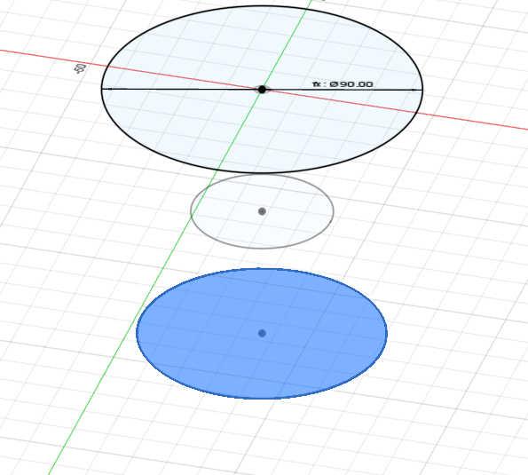 Þegar botnin var klár er að hægri smella á hann og gera "offset plane" fjarlægðin hét í parameter "hæðmiðja" sem var 40mm. og þvermálið "miðja" var einnig 40mm. Efsti hringurinn er tekin í offset plane frá neðsta hring með parameternum "hæð" eða 80mm og Þvermál "toppur" =90mm.
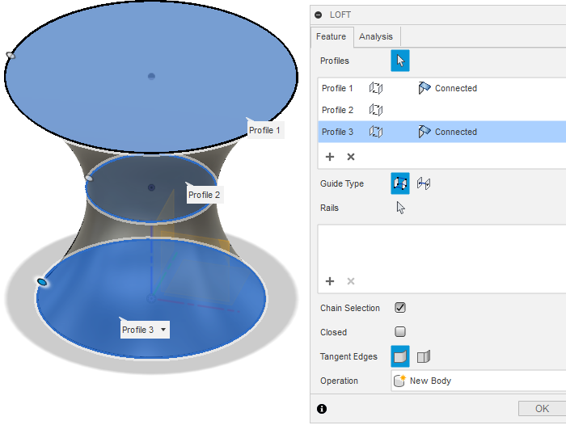 Til að gera hringina að formi nota ég "create - loft" og vel hringina þrjá og þá birtist formið.
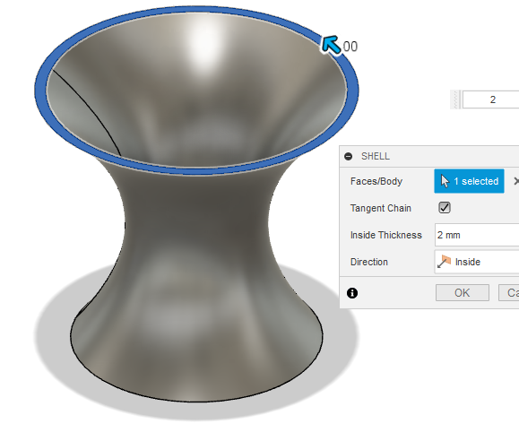Nú er stykkið massíft og fer ég næst í "modify - shell" vel efsta yfirborðið og þá er hægt að velja veggþyktina á forminu. í þessum vasa hafði ég veggþyktina 2mm. stykkið er nú tilbúið og exportað sem stl. skrá og flutt yfir í ultimaker cura forrit til að gera klárt fyrir 3d prentun.
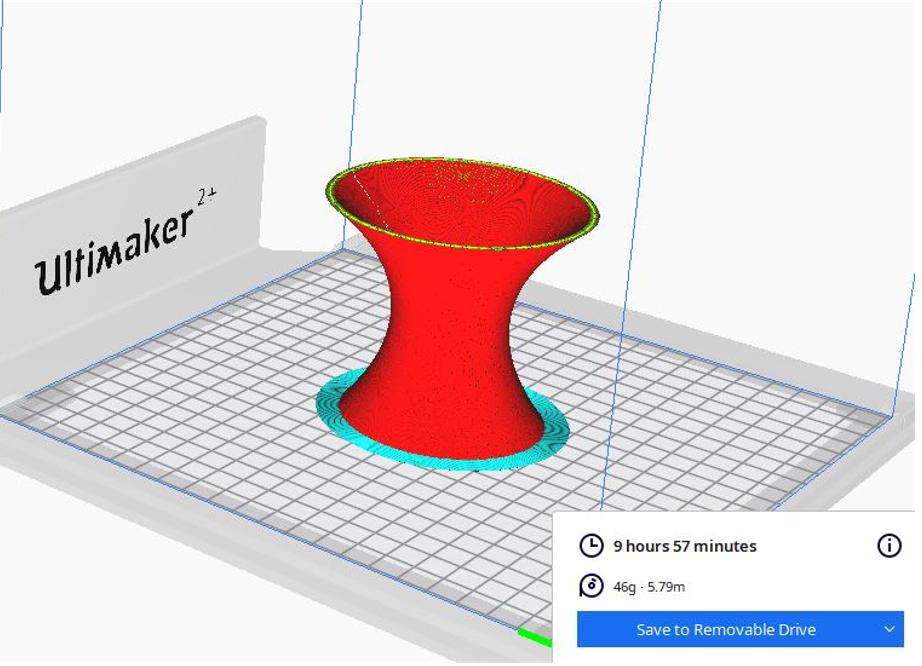 Vasinn er komin í cura, stillingarnar var á extra fine, þar sem veggþykktin var einungis 2mm hafði ég 100% fyllingu, ekkert support þurfti en hafði samt auka snertiflöt neðst þar sem prentarinn bætir við þunnum fleti neðst til að auka stöðuleika og festingu við prentaran.
3D skönnun
Hér í fablab austurlandi er aðeins einn skanni eða xbox 360. Ég prófaði að skanna strákinn minn og prenta hann út, skannin er fremur grófur og er útkoman svoldið óskýr. Ferlið var þægilegt ég stillti honum upp í 1m fjarlægð þar sem hann sat á snúnings stól og snéri hann sér í hringi þangað til að skönnun var tilbúinn. Modelið vistað sem slt file sett upp í cura. Með stillingarnar prófaði ég að nota ekkert support, 40% fyllingu og hafði á extra fine stillingu og kom það ágætlega út en það mætti vera smá support undir hökunni.
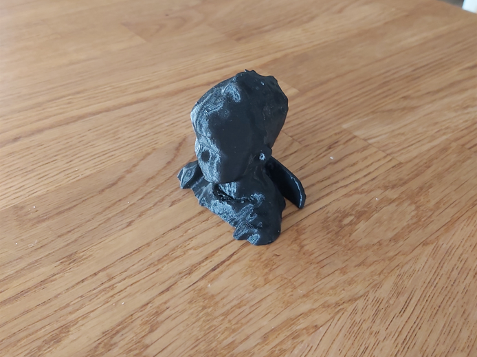
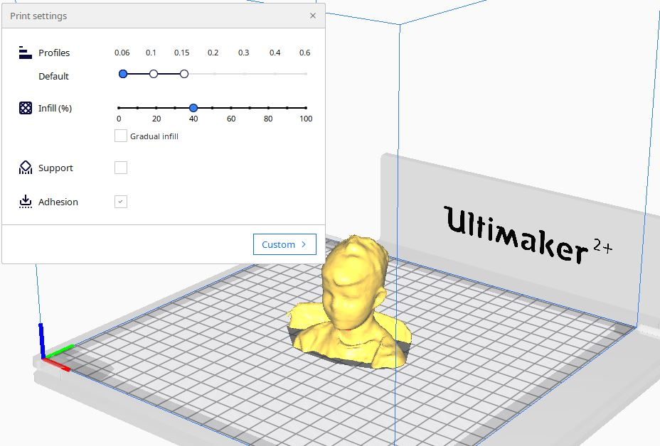 Ég teiknaði haldfang eða einskonar vængjaró sem passar fyrir 19mm ró, haldfangið prófaði ég að nota á hverfistein og passaði þetta allt mjög vel. róin var það passleg að það þurfti að banka hana létt í haldfangið með hamri og ekkert lím, haldfangið var passlega stórt svo að það náðist að herða nægilega vel með handafli. Ég á eflaust eftir að prófa fleyri útgáfur að þessu á næstunni. 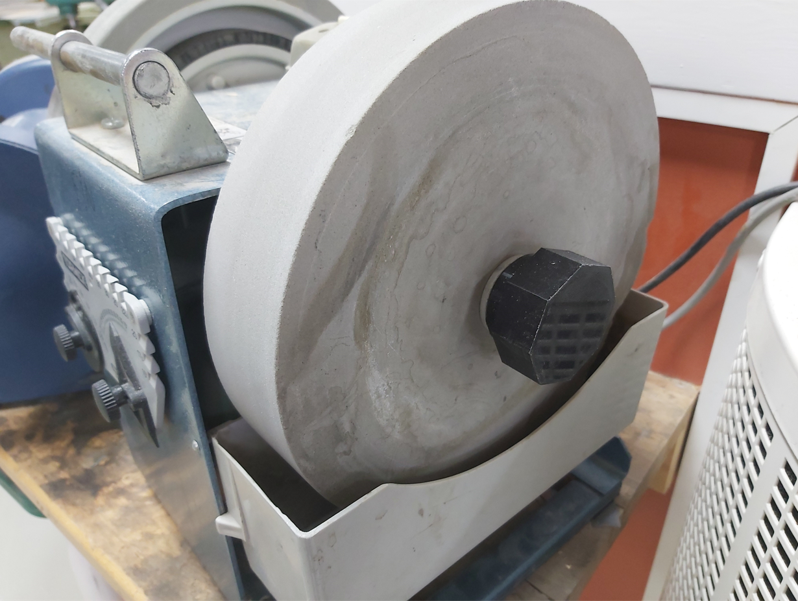
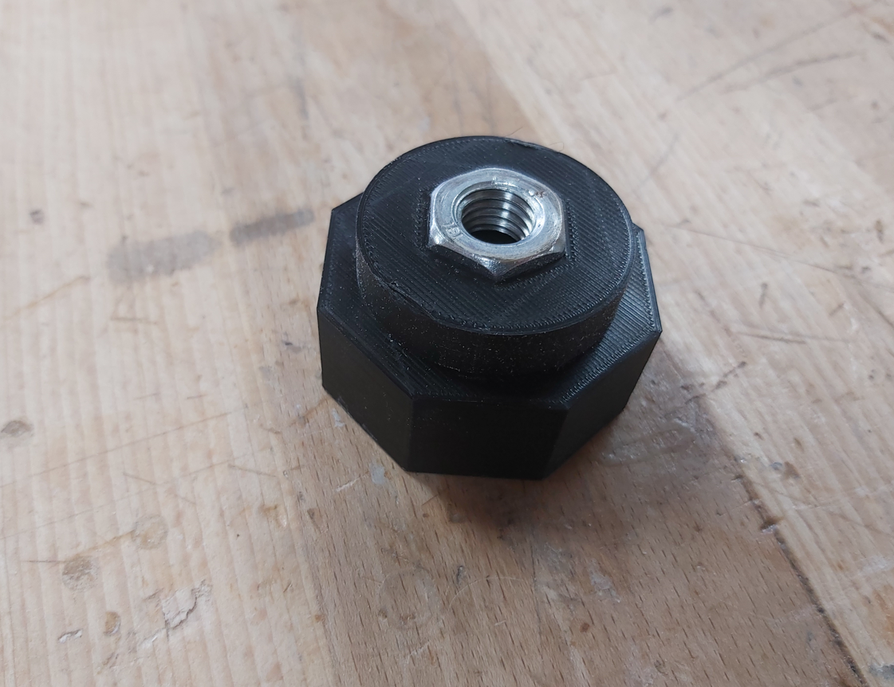
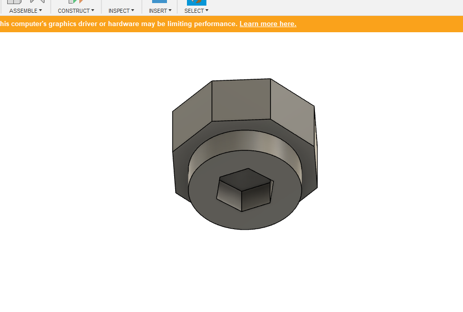 Þessa önnina er ég einnig í áfanga sem heitir hönnun og smíði leikfanga, eitt verkefnið var að smíða hoppudýr. dýrið sjálft er úr frauði sem er tálgað til og málað og ákvað ég að gera skjaldböku. inni í dýrinu er mótor með svinghjóli sem myndar víbring sem lætur dýrið hoppa um. þar sem teinarnir eru svo grannir ákvað ég að hanna lappir fyrir hana í fusion og 3D prenta. 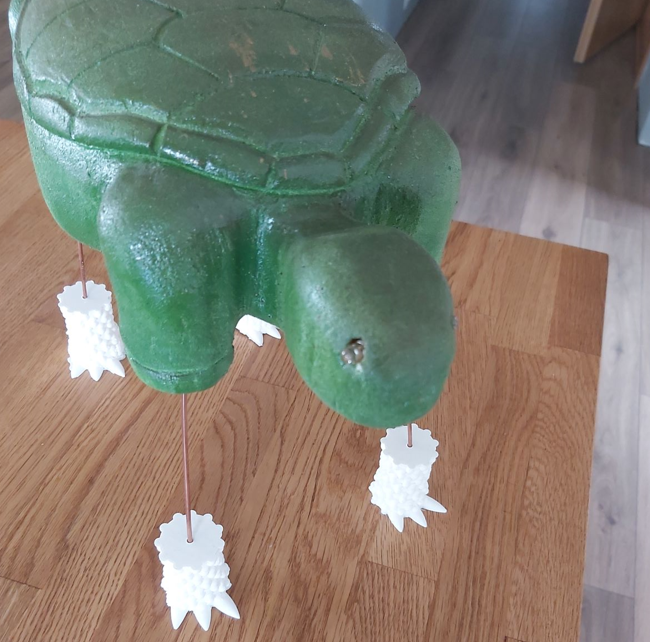
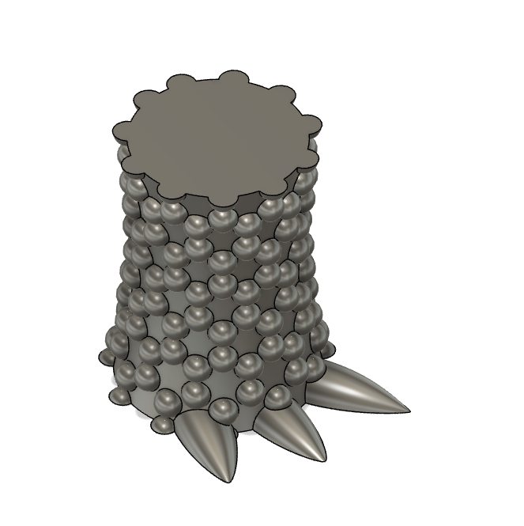
Önnur verkefni sem ég gerði á önninni
haldfang
fætur á skjaldböku